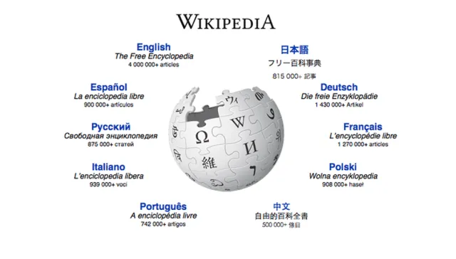

Descubra a WIKIPEDIA

Principais Topicos
- One Piece:
One Piece é uma série de mangá e anime criada por Eiichiro Oda, que segue a aventura de Monkey D. Luffy,
um jovem pirata com o poder de esticar seu corpo como borracha após comer uma "Akuma no Mi" (Fruta do Diabo)..
- Cavaleiros do Zodíaco:
Cavaleiros do Zodíaco (Saint Seiya) é uma série de mangá
e anime criada por Masami Kurumada. A história acompanha Seiya e outros jovens guerreiros conhecidos como Cavaleiros (ou "Saints")
, que lutam em nome da deusa Atena para proteger a Terra de ameaças divinas.
- Technology Trends:
- Emerging technologies such as artificial intelligence,blockchain, virtual reality, and their applications in various industries
- Health and Wellness:
- Latest developments in healthcare, fitness trends, mental health awareness campaigns, and breakthroughs in medical research
- Cultural Phenomena:
- Trends in entertainment, pop culture, and social media, including popular movies, TV shows, music, and viral content.